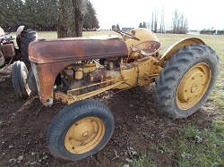

1910 Aultman & Taylor Steam Traction Tractor
 Year: 1910
Year: 1910
Donor: Doris DeHart and Mark Grey
Engine: Steam/Boiler
Transmission: Traction
Number of Doors: open
Curb Weight in Lbs: approx 19500
We like to call this tractor a Hood River icon. For many decades it was a main feature in the Hood River 4th of July Parades. In the mid-80s it fell in to disrepair and people no longer got to see it. When the museum opened it fit right in with our antiques. It took us a while to find a team to restore it but once they started the tractor was back up and running in under 6 months! Originally we had thought this was a 1911 but as we restored the tractor all the serial and part numbers we found were from 1910 – our guess is that it was built in 1910 and by the time it reached the Hood River Valley, it was 1911 but still a “brand new” tractor. That’s more than 100 years of confusion cleared up!
1939 Ford 9N Tractor
Year: 1939
Donor: Cliff Mansfield
Engine: 4 Cyl.
Transmission: Manual (3 speed)
Number of Doors: open
Curb Weight in Lbs: approx 2410
The Ford 9N tractor brought about a revolution for Ford tractors. Previous models were well liked but many had a tendency to accidentally flip backward if the implements being pulled on the back encountered an immovable obstruction. Ford partnered with Henry Ferguson outfitting his tractors with a special 3-point hydraulic hitch system which made the tractors not only much safer but changing implements a total breeze. It was light but rugged and cost significantly less than other tractors on the market making it a perfect vehicle for the many small farms that still dotted America.
1939 John Deere Tractor Model B
Year: 1939
Donor: the Burback family and the Bean family
Engine: 2 Cyl.
Transmission: Manual (4 speed)
Number of Doors: open
Curb Weight in Lbs: approx 4500
For many years in the hard working tractor world, looking good while getting the job done was sidelined for functionality. John Deere bucked the trend with a complete restyling of both their "A" and "B" lines in 1939. Not only was this tractor a powerful workhorse but the streamlined styling and other body tweaks gave the vehicle a more modern feel.
1946 McCormick-Deering W6 Tractor
 Year: 1946
Year: 1946
Donor: Don and Joni Walker
Engine: 4 Cyl.
Transmission: Manual (5 speed)
Number of Doors: open
Curb Weight in Lbs: 4610
This standard tread tractor was part of the International Harvester family of vehicles. After the 1946 year, the full MicCormick-Deering name was shortened to just McCormick which remains in use today.